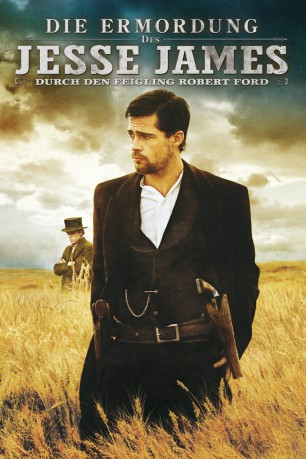
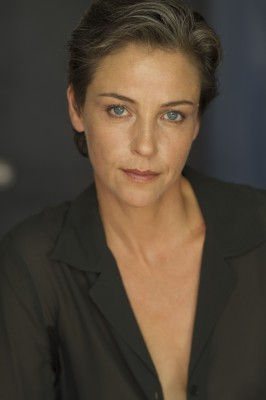

#1375 Die Ermordung des Jesse James durch den Feigling Robert Ford
Alternativ: The Assassination of Jesse James by the Coward Robert Ford
Auszeichnungen: für 2 Oscars nominiert
 
 IMDB-Wertung: 7.5 / 10
IMDB-Wertung: 7.5 / 10  Metascore: 68
Metascore: 68 
Die USA im Jahre 1881: Der 34-jährige Jesse James ist der berühmteste und meist gefürchtete Gangster des Landes und führt mit seinem älteren Bruder Frank die wohl bekannteste Gangsterbande des Landes an, die für unzählige Zug-, Postkutschen- und Banküberfälle verantwortlich ist. Zwar wird James von einem Großteil der Bevölkerung als eine Art Robin Hood verehrt und von der Presse bewundert, aber ebenso gnadenlos wird er von der Staatsmacht verfolgt und bringt seinen Bandenmitgliedern nur noch Misstrauen gegenüber, seitdem die meisten Angehörigen der legendären James-Younger-Bande entweder Tod oder inhaftiert sind. Als sich sein Bruder aus dem gefährlichen Geschäft zurückzieht und sich zur Ruhe setzt, kann Jesse James nur noch den Brüdern Charley und Robert Ford vertrauen, die vor kurzem zu den Gangstern gestoßen sind. Dies stellt sich als fataler Fehler heraus…
Jahr: 2007
Dauer: 160 Minuten
FSK: 12
Land: USA Studio: Warner Bros.Tonspuren: DD5.1 - ,
Untertitel: Deutsch,
Auflösung: 1080p (1920x800) Größe: 6768 MB
Genre: Drama, Krimi, Western, Geschichte, Biographie
Regisseur: Andrew Dominik
Drehbuch: Andrew Dominik, Ron Hansen
Soundtrack: Nick Cave, Warren Ellis
Darsteller:
 Brad Pitt als Jesse James
Brad Pitt als Jesse James Mary-Louise Parker als Zee James
Mary-Louise Parker als Zee James- Brooklynn Proulx als Mary James
 Casey Affleck als Robert Ford
Casey Affleck als Robert Ford Sam Rockwell als Charley Ford
Sam Rockwell als Charley Ford Jeremy Renner als Wood Hite
Jeremy Renner als Wood Hite Sam Shepard als Frank James
Sam Shepard als Frank James Garret Dillahunt als Ed Miller
Garret Dillahunt als Ed Miller Paul Schneider als Dick Liddil
Paul Schneider als Dick Liddil-  Alison Elliott als Martha Bolton
 Tom Aldredge als Major George Hite
Tom Aldredge als Major George Hite Pat Healy als Wilbur Ford
Pat Healy als Wilbur Ford Michael Parks als Henry Craig
Michael Parks als Henry Craig Ted Levine als Sheriff Timberlake
Ted Levine als Sheriff Timberlake- Joel Duncan als Deputy
 James Carville als Governor Crittenden
James Carville als Governor Crittenden- Adam Arlukiewicz als Newsboy
 Michael Rogers als Onlooker at Jesse's Death
Michael Rogers als Onlooker at Jesse's Death- Sarah Lind als Bob's Girlfriend
- Nick Cave als Bowery Saloon Singer
 Zooey Deschanel als Dorothy Evans
Zooey Deschanel als Dorothy Evans- Michael Copeman als Edward O'Kelly
 Hugh Ross als Narrator
Hugh Ross als Narrator- Kalyn Bomback als Theatre goer , uncredited
- Carey Feehan als Train Passenger , uncredited
- Sara Fowlow als Girl of Sixteen , uncredited
- Catherine Gell als Widow , uncredited
 Anthony Harrison als Marshal Craig , uncredited
Anthony Harrison als Marshal Craig , uncredited- Barb Mitchell als Upscale Guest , uncredited
- Sarah Murphy-Dyson als Girl Playing Zee , uncredited
- Myrna Vallance als The Governors Wife , uncredited
- Dustin Bollinger als Tim James
- Joel McNichol als Express Messenger
- James Defelice als Baggagemaster
- J.C. Roberts als Engineer
- Darrell Orydzuk als Ukranian Train Passenger
- Jonathan Erich Drachenberg als Young Train Passenger
- Torben Hansen als Danish Train Passenger
- Lauren Calvert als Ida
- Kailin See als Sarah Hite
- Jesse Frechette als Albert Ford
- Stephanie Wahlstrom als Store Customer
- Ian Ferrier als Photographer
- Calvin Bliid als Jesse E. James aka Tim
 Matthew Walker als Bowery Saloonkeeper
Matthew Walker als Bowery Saloonkeeper- Laryssa Yanchak als Ella Mae Waterson
- Doug Christian als Tavern Patron , uncredited
- Myles Peterman als Train Boy , uncredited
- Trevor Woroby als Marty, saloon patron , uncredited
Datei: X:\HD-Western-2000-2015\Ermordung des Jesse James durch den Feigling Robert Ford, Die (2007, FSK12, 1920x800).mkv seit 30.06.2015
Festplatte: HD Eastern+Western
 Es gibt insgesamt 61 Filme in der Gruppe 'HD-Western-2000-2015'
Es gibt insgesamt 61 Filme in der Gruppe 'HD-Western-2000-2015'